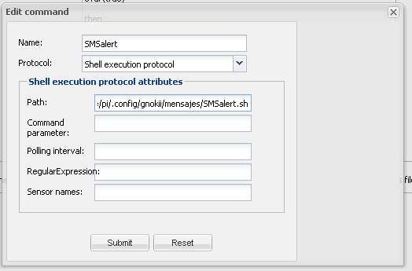
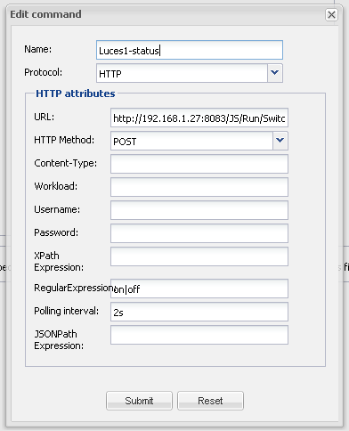

Hi there,
I have a little question to finish an home automation concept. We have some LUA script or bash script on a linux computer and we need to integrate Openremote macro or command on it.
It's possible to call an Openremote command or macro through the shell ? I have read the REST API but i don't found a procedure to execute a command that is not linked to a design ...
Possible ?
Thanks a lot for your answer.
Guillaume
{kind=link}
{kind=link}
|
As far as I recall the REST call to trigger a command is based on the button ID, which would fit to your findings. |
|
Yes I thought of this solution. But it's not very usefull. |
|
No. Shell would be an external process which only has access through REST. |
|
If you want to execute a command from an external shell, just use the curl command to trigger the REST HTTP call. However, you already found one of the limitations that you need to have a (potentially unused) button to trigger a command or macro. The ideal solution is to add an additional REST call on the controller that could take e.g. the command name and execute it. |
|
Ok thanks. Yes it can be a very nice solution to integrate Openremote macros with Crestron or other home automation system. We look in our side how we can help you on this development. Regards |
|
FYI: we do support a close integration with AMX control systems for the Pro version. What other system were you thinking about ? Also, a closer integration with Crestron could be nice. |
|
Hello team, I'm now starting with rule programming. The first one I have tried was a rule that execute a bash script after an event happens (for example light status on). The problem I had was the script never runs. I have added a sentence to check if the rule works, sending a message to the log when the lights goes on, and it worked fine, but the script doesn't run. I have tested the script solely and work fine. The script I have created is like this (echo "message" | gokii --sendsms "phone number"). I have a gsm module connected in the USB port of my raspberry-pi and I use gnokii to send SMS messages. The idea is (if finally the rule works) to add a door sensor and send alerts when door is open. Thanks in advance Abraham Martin |
|
If the script doesn't execute even from a button then there's something wrong with the inter-process communication. I'd leave the rules out of it for now and just try to get the button to work first. It may be a permission issue – at the moment I can't think of other reasons why the button would fail to execute a script. Unless there are some specific errors in the logs. |
|
Hello Juha, As I see in another forum I have added a SHELL command log in the log4j.. configuration file and I have no error messages from the shell execution: Here you are the output: I cant't understand why the result of the shell doesn't work. I have no SMS received in my mobile, but it seems to be executed correctly. If you have any idea to test, it will be very appreciated. Abraham |
|
Reading in another forum I have seen a problem like mine and the solution given was to create a new sensor type=custom and add the command that uses the "Shell execution protocol". After that I have an error in the shell.log file (I have no rule created only the sensor with the shell). The output is : " DEBUG 2013-10-02 20:40:01,017 (Shell): Shell command: Rr returned: The message "No such file or directory" I suppose is the key in this problem, but I don't know why it happens. Abraham |
|
It could be that the openremote controller is started with a user that does not have exec rights on your shell script. |
|
I have reviewed the rights that the script has and it seems to be ok. Here you are a snapshot: pi@openremote ~/.config/gnokii/mensajes $ ls -la thanks Abraham |
|
Your log says: Shell command: Rr returned: But your command is SMSalert.sh. |
|
The command I have created is the next:  I have added the entire path to the command. And the scrip is : SMSalert.sh #!/bin/sh echo "Alert: lights on" | gnokii --sendsms 999999999 |
|
1. Your command should be /bin/sh |
|
Something seems to be wrong at anywhere. I have deleted the command SMSalert and in the log appears the same error massage as before, pointing to the path given in the shell execution protocol attributes. I have checheck the time and are new entries to the log, not old ones. I can't understand why this happens if the command doesn't exist. Is there a cache to clear? The command "Reload configuration and clear cache" I can't use because it returns me the error "failed to reload configuration and clear cache" Thanks |
|
Is there a way to flush memmory after rule creation. After some modifications in the Designer, log continue showing the configuration as it was before the change. I have to reboot my raspberry to apply new changes. |
|
Hi Michal, When you write: "your command should be: /bin/sh" are you refering to the path? Thanks |
|
Hi Michal, With your suggestion and appliying the information I asked in my last post finally it works. Great!. I have spent more than two week with this issue. I have not solved yet how to say gnokii to send a message when the command is executed by OR, but now I have the certaninty that the scipts runs. Thanks to everybody that help me with this problem. Abraham |
|
Once solved the problem related with the Shell execution in rules I have the next issue related with rule scripting. Why the next rule works? package org.openremote.controller.model.event global org.openremote.controller.statuscache.CommandFacade execute; import org.openremote.controller.protocol.*; //----------------------------------------------------------------------------------------------- rule "TurnLightOff" timer (cron: 1 * * * * ?) when eval (true) then execute.command ("SMSalert") ; end and this one doesn't: package org.openremote.controller.model.event global org.openremote.controller.statuscache.CommandFacade execute; rule "Send Alert SMS" when Event ( source == "Fibaro2-Luces_pasillo", value == "on" ) then execute.command ("SMSalert"); end "Fibaro2-Luces_pasillo" is a sensor with two possible values on/off Thanks again. Abraham Martín |
|
Is that sensor of type:switch ? |
|
Yes, it is a type:switch sensor |
|
Sorry, that the only thing that came up to my mind, except for checking once more if there isn't a typing error in the sensor name. |
|
I just created a rule type:custom and worked fine. I don't know why but it worked! |
|
There is something funny with this switch sensor. It is described as boolean, but has as values on and off instead of false/true what I would expect. Did you add any custom state items in the screen? If so which pairs did you enter? |
|
No, I haven't added nothing special. I only created a new sensor type:custom and added the same command that sensor type:switch had.  Abraham |